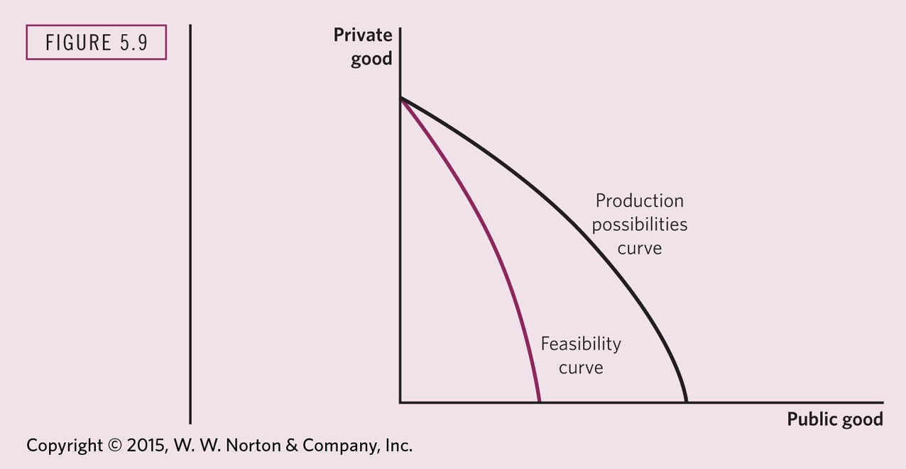
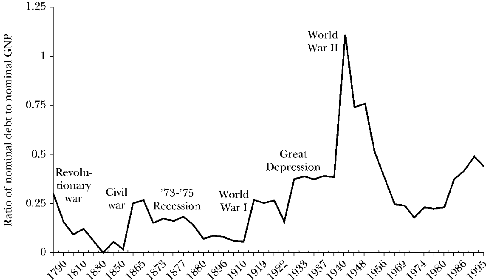
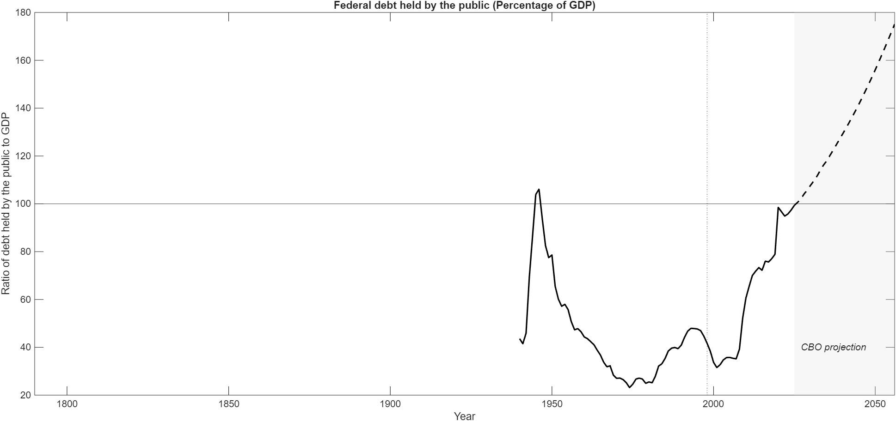
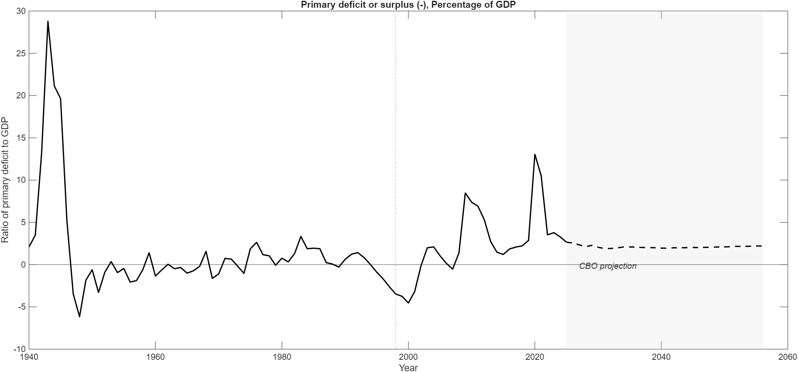
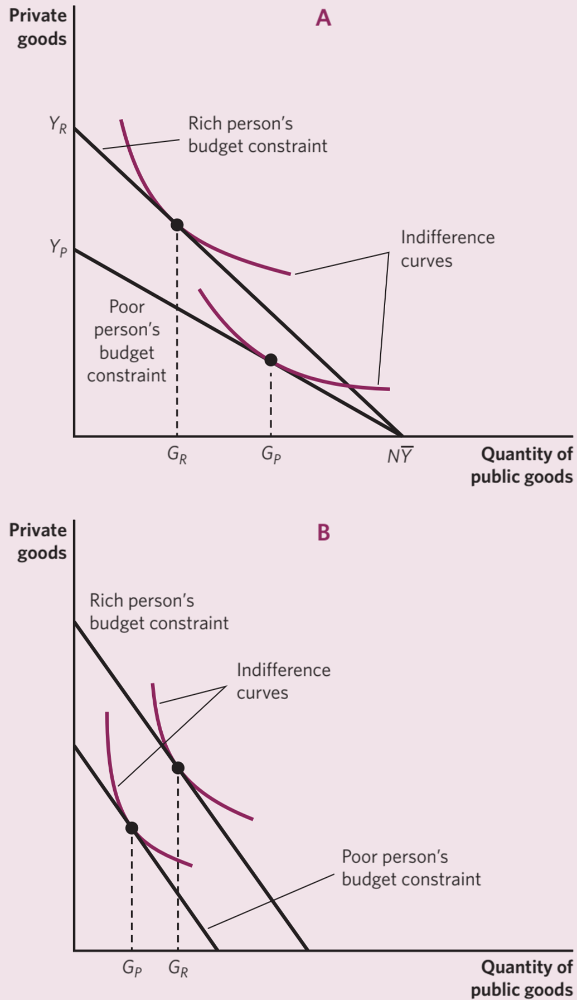
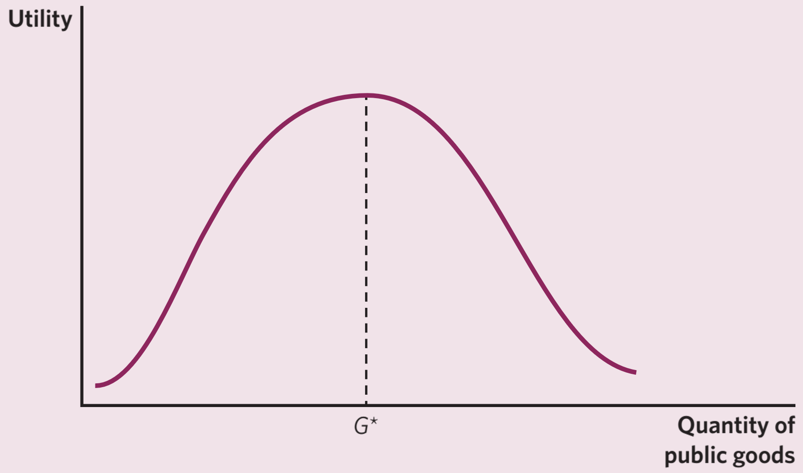
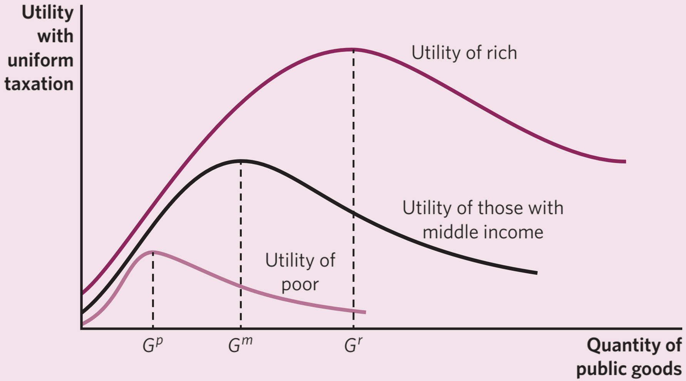
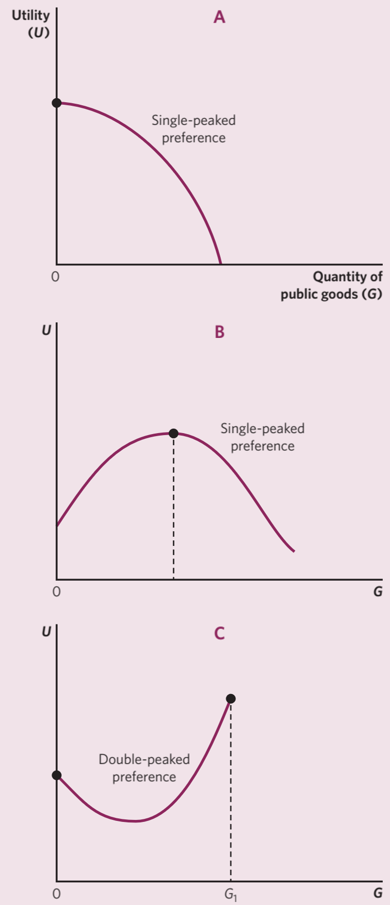

Fall 2026
Feasibility Curve, Given Tax Distortions

For a given tax system,
U.S. Public Debt Since 1790




of government expenditures occurs at the tangency between the budget constraint and the indifference curve

differ with respect to their preferred level of expenditures


Fraction of Income Paid in Taxes
| A | B | C | |
|---|---|---|---|
| Poor | 20% | 18% | 17% |
| Middle | 20% | 18% | 21% |
| Rich | 20% | 23% | 22% |
aggregates preferences as follows: For any two alternatives, \(x\), \(y \in A\)
Vote on A versus B
| A | B | C | |
|---|---|---|---|
| Poor | 20% | 18% | 17% |
| Middle | 20% | 18% | 21% |
| Rich | 20% | 23% | 22% |
\(\Rightarrow\) tax schedule B will win a majority over A
Vote on B versus C
| A | B | C | |
|---|---|---|---|
| Poor | 20% | 18% | 17% |
| Middle | 20% | 18% | 21% |
| Rich | 20% | 23% | 22% |
\(\Rightarrow\) tax schedule C wins a majority over B
Vote on C versus A
| A | B | C | |
|---|---|---|---|
| Poor | 20% | 18% | 17% |
| Middle | 20% | 18% | 21% |
| Rich | 20% | 23% | 22% |
\(\Rightarrow\) A defeats C
Fraction of Income Paid in Taxes
| A | B | C | |
|---|---|---|---|
| Poor | 20% | 18% | 17% |
| Middle | 20% | 18% | 21% |
| Rich | 20% | 23% | 22% |
For most distribution issues there will not be a majority voting equilibrium.
Bueno de Mesquita, Ethan. 2017. Political Economy for Public Policy. Princeton: Princeton University Press.
Let \(A\) be the set of alternatives
Completeness: For any \(x,y \in A\) one of the following is true
Transitivity: For any \(x,y,z \in A\)
An aggregation procedure is a function that takes as inputs all of the individual preferences and returns as output a social preference. A social preference, just like an individual preference, is a rank ordering of all the alternatives in the set \(A\).
3 alternatives: Low (\(L\)), Medium (\(M\)), or High (\(H\)) Taxes
3 individuals
\[ H \succ_1 M \succ_1 L \] \[ M \succ_2 H \succ_2 L \] \[ L \succ_3 M \succ_3 H \]
Social preferences under majority rule aggregation
\[ M \succ_{S,maj} H \succ_{S,maj} L \]
3 alternatives: Low (\(L\)), Medium (\(M\)), or High (\(H\)) Taxes
3 individuals
\[ H \succ_1 M \succ_1 L \] \[ M \succ_2 H \succ_2 L \] \[ L \succ_3 M \succ_3 H \]
Social preferences under Borda count aggregation
\[ M \succ_{S,bor} H \succ_{S,bor} L \]
Under this procedure, if there are \(k\) alternatives,
3 alternatives: Low (\(L\)), Medium (\(M\)), or High (\(H\)) Taxes
3 individuals
\[ H \succ_1 M \succ_1 L \Leftrightarrow L=0, M=1, H=2 \] \[ M \succ_2 H \succ_2 L \Leftrightarrow L=0, M=2, H=1 \] \[ L \succ_3 M \succ_3 H \Leftrightarrow L=2, M=1, H=0 \]
Social preferences under Borda count aggregation \[ M \succ_{S,bor} H \succ_{S,bor} L \Leftrightarrow L=2, M=4, H=3 \]
Bueno de Mesquita
Stiglitz & Rosengard
If \(x \succ_S y\) and \(y \succ_S z\), then \(x \succ_S z\)
This is a basic standard of coherence for social preferences
3 alternatives (\(x,y,z\)) and 3 people (\(1,2,3\))
Individual preferences
\[ x \succ_1 y \succ_1 z \] \[ y \succ_2 z \succ_2 x \] \[ z \succ_3 x \succ_3 y \]
Social preference
\[ x \succ_{S,maj} y, \quad y \succ_{S,maj} z \quad, z \succ_{S,maj} x \]
5 alternatives \((x^1,\ldots, x^5)\) and 3 people (\(1,2,3\))
Individual preferences
\[ x^2 \succ_1 x^1 \succ_1 x^4 \succ_1 x^3 \succ_1 x^5 \] \[ x^3 \succ_2 x^2 \succ_2 x^1 \succ_2 x^4 \succ_2 x^5 \] \[ x^5 \succ_3 x^1 \succ_3 x^4 \succ_3 x^3 \succ_3 x^2 \]
\(x^4\) wins, but \(x^1\) is unanimously preferred
Individual preferences
\[ x \succ_{1,2} y \succ_{1,2} z \] \[ y \succ_3 z \succ_3 x \] \[ y \succ_4 x \succ_4 z \]
\(y\) is Borda winner with 6 points
Add \(w\) while holding all other preferences fixed
\[ x \succ_{1,2} w \succ_{1,2} y \succ_{1,2} z \] \[ y \succ_3 z \succ_3 x \succ_3 w \] \[ w \succ_4 y \succ_4 x \succ_4 z \]
\(x\) is the Borda winner with 8 points
Suppose there are at least 3 alternatives and at least 2 people
Only one aggregation rule satisfies:
That rule is dictatorship
Sen (1970, JPE): There is no social decision function that can simultaneously satisfy Conditions \(U\), \(P\), and \(L\).
Decision memos are documents that
National Library of Medicine. “This Lead Is Killing Us: A History of Citizens Fighting Lead Poisoning in Their Communities.” U.S. National Institutes of Health. Accessed October 12, 2026.
https://www.reuters.com/article/business/healthcare-pharmaceuticals/should-schools-close-during-bad-flu-outbreaks-idUSBRE89T1DJ/.
http://www.washingtontimes.com/news/2017/jan/23/bill-to-raise-virginia-felony-larceny-threshold-ad/